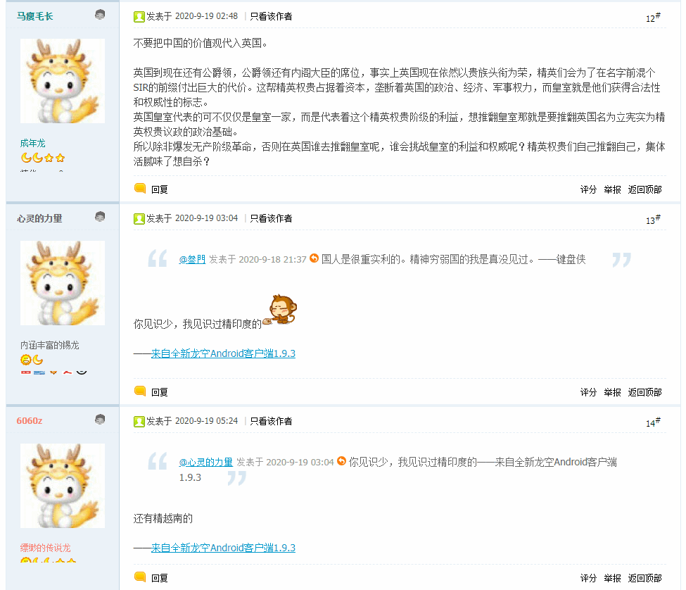
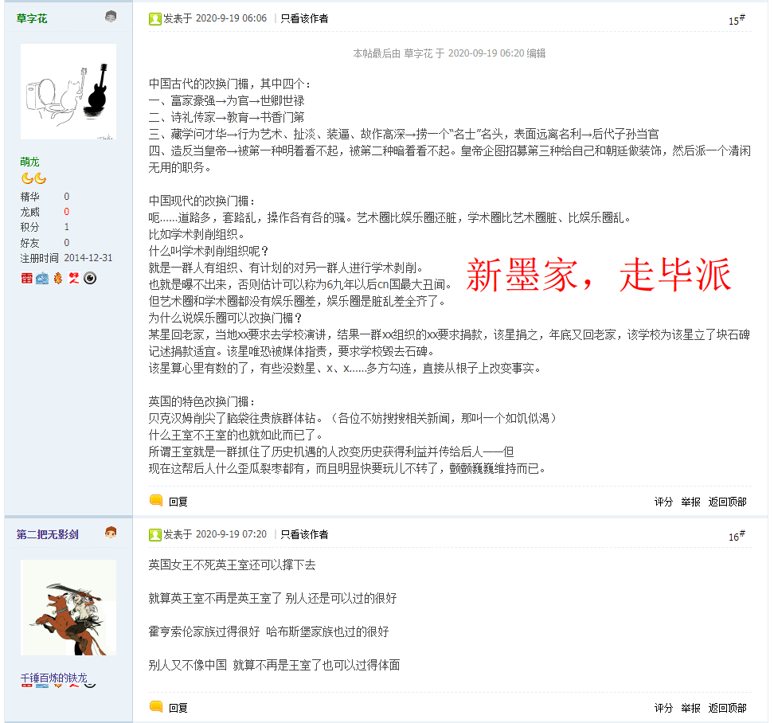
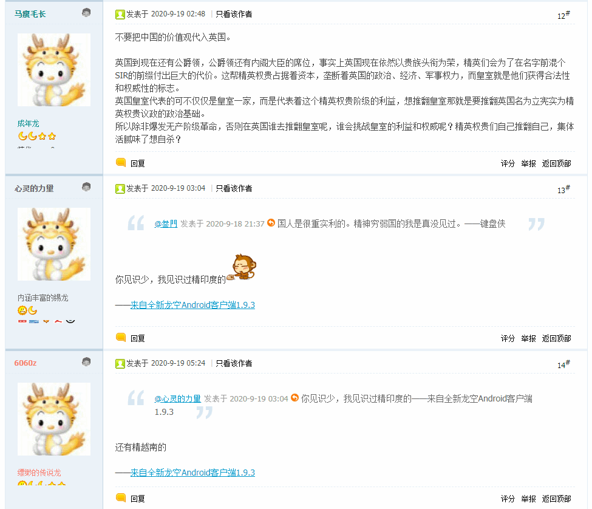
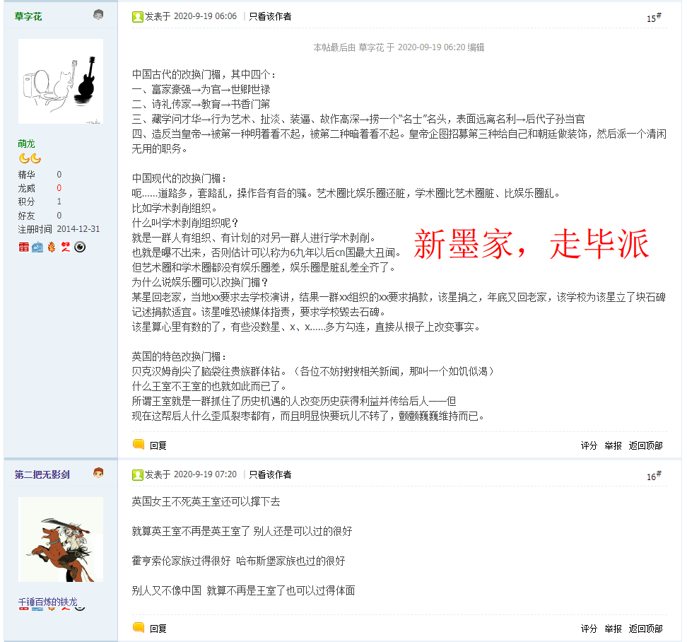

“诗言志”，郭春海拎着把剑，绕着穿长衫而抱头蹲在地上的一帮家伙来回踱步，侃侃而谈，“何不策高足，先据要路津？无为守穷贱，轗轲长苦辛”。
2020-09-18 09:15
洗完澡了精神抖擞容光焕发，上网乱转没发现什么重要情报。哪怕是充沛着全球逗哔的「匿名索虏」，最近几天的情报浓度也越来越低了，逗哔含量显著上升。虽然又看见大批「地图开疆」类型放风带节奏，但是里面按照剧本互相对话念诵的幕后黑手炮制的煽风点火挑拨离间经典台词还是那些，没啥新鲜玩意。漠北大手情报机构指使的岭南精盎情报掮客光顾着向有关部门举报我的个人博客站点了，本职工作都耽误了吧？
还有就是神棍大忽悠再次出场，其它宣传海报和广告牌就保留在本地当素材了，包括但不限于「震惊重磅突发号外，蛇精病蔓延全球，撒旦教会才是太上国度」之类，这里就贴一个与《设定集》有关的素材：

简单说，被神棍大忽悠视为「诺斯替」的核心理念的「生命之树」，其实是远古各地异教互相借鉴的产物。之前说过了，没碰上希腊哲学之前的「希伯来教」就是我中华兲朝上国道教那种样子，收编了充沛的巫术型民间信仰「封神」，连厕所都有「紫姑娘娘」负责，隔三岔五在九省通衢の煎蛋之上看见屎尿屁相关情报，都与这位「娘娘」有关。
而希伯来碰瓷希腊之后呢，就好比我中华兲朝上国虽远必诛の强汉时期「罢黜百家独尊儒术」之后再把首任教主董仲舒打翻在地，而后其它教内同志将其所属的派阀「阴阳家」一起开除出教。于是，道家就吸收了阴阳家变道教了。这就可以面向繁荣的简体中文互联网上只懂汉语的人民群众解释，类比「正统」犹太教基督教和「异端」诺斯替主义的演变过程。
因此，在《〈设定集〉注释〔五〕》当中提到了，教会职称照搬，其它职称当中「伟大」尊号属于法师而「光荣」尊号属于祭司，后者是异教。明说了挪用道教术语混合诺斯替主义观点描述如今重建的威卡教之类民间传统信仰，包括但不限于凯尔特及北欧等地神话。在第六篇设定《马耳他护哔骑士团》当中已经出现了管理「修道院」的「炼金术士」，还念了两句吕洞宾的诗呢。
顺便解释一下，说过《恶补记》是《设定集》注释的「疏」，那么《异闻录》网络版草稿可以视为《设定集》「正传」大纲的草稿。比方说，应该在啥时候放出一点背景略微展开世界观吖？很多码字巨侠都会谆谆教导仆街写手，言必称文艺理论。这种时候我则亲自「示范」什么叫「艺术来源于生活又高于生活」。
对，情报掮客啥时候爆料「李世民是土耳其人」，实时影射的《异闻录》就啥时候深入揭批「哪儿来的野种叫嚣“大野得胜”“胡虏必成”」。因为放出爆料的时间点是幕后黑手「制片人」运用充沛资源炮制的炉火纯青还彩排甚至上演过多遍经得起历史检验的精品情节，总比闭门造车一拍脑袋机械降神安排生硬的神转折骚操作更合理。还觉得不合理的读者，就想想「现实比小说更离奇」这条原则吧，总不至于对党国高音喇叭和民间自新媒体提供充沛物证的现实世界产生怀疑吧？
别的也没啥了，如果说与我有关的现实剧本，那就是砥砺奋进七八年来「舍不得孩子套不住狼」之类得意忘形肆无忌惮的嘲笑。说过了每次我点开一个链接，就有相应的内涵段子无聊图推送到眼皮底下，以及「又有卡菲勒被我们马瓦力钓鱼了」。我个人对于啥「网络暴力」毫无感觉，更没有任何抑郁的表现，之前能发言的时候遭遇挑衅，每次都把职业喷子喷得向有关部门举报然后以「政治敏感」理由「亦当删去」为止。
也就是说，家贼拿我当幌子，或曰伪装成一面旗帜的一块抹布，满世界诈骗那些不明真相的「支持者」。我自己啥也没说，家贼已经到处表态「那谁已经挑边站队啦，快去投资」……然后下注买我输。砥砺奋进七八年来骗了多少人或曰套了多少狼，我是不知道的，就看见隔三岔五推送「少废话，快还钱」之类情报，暗示家贼巨额财政窟窿难以填补。
所以，在前一篇结尾提到作为金融财团形式存在「影子王朝」的时候，就已经按照更早一篇「兄终弟及」「易子而食」的原则，设定了秦曹孙刘杨李赵……这些「龙裔」控制的财团，架空中每一家的「老大」待遇都照搬四十余年来家贼「玩游戏练废大号」操作。
具体到「马」，无论是阿里还是腾讯，在《异闻录》正文当中已经提到了，唯一正式登基的龙裔，就是湖南的「马楚政权」，正好与本朝大批湖南开国元勋对得上号，再加上汉阳造「八三四幺」传国玉玺的制造商「九省通衢」，戏码有得是。
所以第一篇异闻除了开头就是结尾嘛，幕后黑手「制片人」炮制了「没什么自由意志，中央情报局已经钦定了」剧情大纲之后，旗下「作者」开始自我抄袭太阳底下没有新鲜事，「编剧」则与时俱进安插充沛新时代气息的情节，「导演」则到处海选名角大腕，终于挑了个妓院出身不知道自己是哪儿来的野种的「主角」嘛。
果然人民群众喜闻乐见吧？参考「大卫之星」：

2020-09-19 02:00
刚爬起来酒劲还在头昏脑胀，上网乱转发现耍钱的新浪或曰后浪正在奔走相告两条科技昌明民智大开的重要情报：
22:16:38【巴克莱：市场估值处于互联网泡沫水平，下调六只大型科技股评级】巴克莱周五表示，即使在最近回调后，美股估值也已接近2000年互联网泡沫时期的最高水平，其中一些最大的风险隐藏在导致市场反弹的科技股中；将FANMAG（Facebook、亚马逊、奈飞、微软、苹果和谷歌母公司Alphabet）的股票评级下调至与大盘持平。
23:56:23【美银美林：最拥挤的交易——做多科技股】根据美银美林对的最新调查，80%的基金经理认为做多美国科技股是目前最为拥挤的交易，为史上最高。7%的基金经理认为做多黄金是最拥挤的交易，6%为做空美元。
与此同时，国际化大都市「华语第一精日论坛」也在奔走相告一条欢乐向情报：
杀猪盘再现江湖，一个下午财富自由财联社9月18日讯，有股民向财联社爆料，今日中午在股票微信群里收到所谓的“老师”指导买入中坚科技（002779），并声称“预计三连板，冲击40%，撤单一律取消会员资格”，更为关键的是，“老师”明确要求把成交截图及时发送统计筹码量。分时图显示，今日下午开盘后，中坚科技成交量快速放大，1分钟内成交1.54亿，不过截至收盘，中坚科技股价封死跌停。
这已经是九月以来第二个杀猪盘了，上一个嘉美包装是“老师”叫韭菜拉到涨停板之后卖了个天地，然后连续三个一字跌停，更有意思的是，这个时候，喊不要炒垃圾的某会和点名谁谁谁是垃圾的某社都缄口不言了
很多人大概没意识到，以后会满地仙股的。
不惮以最大的恶意揣测，这是家贼看准关键时刻开始「收网」的标志，砥砺奋进七八年来用我当幌子诈骗了不知道多少不明真相的围观群众签下不知道多少份对赌合约开足超高杠杆，现在昭告天下「中坚已死，后浪当立，岁在庚子，学霸大吉」，然后一面旗帜变一块抹布，从小比人聪明还比人努力的新时代童年才俊飒爽登场。
所以之前在多处码字的时候都使用了「献了青春献终身，献了终身献子孙，骨灰盒上盖一块画着镰刀榔头的抹布就被打发」这种固定短语，已经把哪儿来的野种叫嚣「大野得胜」「胡虏必成」欺名盗世上百年来「伪装成一面旗帜的一块抹布」这种经典套路拆穿了。
再说一遍，苏修支持常凯申，美帝支持汉阳造「八三四幺」传国玉玺，所以只要「没什么自由意志，（党）中央情报局已经钦定了」或者直说美帝不垮，这种套路就会无休无止的玩下去。
这时要举一反三触类旁通，南不列颠及北爱尔兰联合王国呢？
可以参考之江临安「原创文学论坛」之上出现的重要情报：
 



其中提到的《英联邦国家巴巴多斯拟转为共和制》时事新闻有中英两国权威媒体，包括但不限于盎视新华社，报道。

多年前之江临安「原创文学论坛」就有爆料，说「大盎帝国」的残余「大盎共荣圈」除了🀛 之外都纷纷表示老佛爷驾崩就散伙，叫唤得最凶的是南非，当时金矿已经有挖空迹象了。而那时的九省通衢「军网最黄黄网最军」正在连载划时代大作《明美》《澳宋》，百善の新世界之「俺老猪」隔着半个地球跨太平洋狂喷殷商后裔赵家人自打「兄终弟及」之后就坚决当「儿皇帝」认了白金汉宫老佛爷当干妈，而赵家人则嘲笑羯族同胞「高举伟大旗帜为了光荣目标正确奋斗」的苦难辉煌《石氏食屎史》其实不过是身为胡虏哪怕纳头便拜全盘西化都没人要于是只能认另外一拨契丹胡虏当干爹罢了。
再看今天这条情报当中出现的两拨人斗嘴，漠北大手情报机构指使的岭南精盎情报掮客替主子辩护的口气甚为迫切，估计是已经获得内幕消息，卡米拉作为克格勃燕子被中央情报局策反的「美国寡妇」身份就要曝光，划时代大作即将翻拍复刻，第三次世界大战迫在眉睫，就差个「异族龙裔遇刺」导火索了。

2020-09-19 03:00
又转了一圈，没发现什么重要情报，就连素材也不多。那么呼应本篇题外话开头，对码字相关的内容扯淡几句结束。
在《没有调查就没有发言权》当中提到了，自打在繁荣的简体中文互联网上各大宣传阵地当中的帐号被漠北大手情报机构指使的岭南精盎情报掮客向有关部门频繁举报之后以「政治敏感」理由「亦当删去」开始，就难以获得读者反馈。
在《有什么装备打什么仗》当中继续征求意见，最起码在《设定集》当中已经出场的那些形象，都是作者在没有反馈的情况下于砥砺奋进七八年来每隔一刻钟就会被家贼或色目混混鸡鸣狗盗之徒炮制突发事件打断思路的碎片式思考的情况下塑造的，甚至未必符合作者自己最初构思的本意，所以期待来自读者的评价。
在《说过了「只胡乱做将去」》当中提到了，所谓「文艺理论」不是没接触过，只不过被「数学渣」的职业习惯覆盖掉了。本来码字以及其它文艺创作需要「具象思维」，与数学专业的「抽象思维」格格不入，形而上学接触多了，具体形象就模糊了。但由于是「钦定考零分の学渣」（渣度参考《恶补记》各篇），好歹还能保留一些历史遗留伎俩。
关于极简主义风格，就用《异闻录》开头举例，只有一句话。
如果是按照「具象思维」描写，或者说按照业内惯例直接以漫画动画话剧之类形式为最终目标，应该怎么把「剧本」拆成「分镜」呢？或者说，这一句话能画几格几页、对应现实时间持续几秒？
说过了我对于音乐美术之类需要一万小时才能登堂入室的领域「眼高手低」，并且由于「评价个冰箱还得会制冷不成」之类原则，对于市面上已经出现的各种作品当中常见表达方式还算熟悉，如果借鉴主流套路的话，大概各种演绎大同小异。
因为以台词开头，按照国际化大都市「华语第一精日论坛」娱乐至死の色目逗哔的评价，是「一句话拆两半说」痼疾。这种情况一般都以面部特写大头像开始，台词本身倒未必在同一格。
前三个字「诗言志」没有提及语气，因为当时一拍脑袋决定示范（参考「缘起」）的时候还惦记着「幻」，所以决定让主角以「仙风道骨」的形象出场亮相。后来随着连载进行，决定搁置各种幻想要素，主角的形象逐步鲜明起来。于是现在回顾，至少有两种可能性。
一种是拖长声「诗～言～志～」，另一种是一字一顿「诗！言！志！」，都伴随着面部表情变化，以慈眉善目或横眉立目开始，经过亲切或狰狞的过渡，最终达成「嘲讽脸」。这么算来，最起码能画六格，足够占满一页。
接下来就是全身像出场，这里就有「神转折骚操作」了，「文质彬彬」不是辩证的统一，存在反差。
插一句，静态表现根据市面上出版物以及扫描版的资料，漫画通常在奇数页开始，所以跨页横幅都是2-3、4-5这样的页码。一般编辑约稿的时候会跟作者说清楚，偶尔有例外也会插一页广告或单页四格，不至于出现「一幅画拆两半印」痼疾。而动态表现就可以按照时间轴「路是自己选的，慢慢来」。
所以，如果是动画或影视剧，应该拉远镜头或者移动镜头，从脸上挪到手上，出现那把剑。而话剧就没辙了，当前场景中所有人物连同其服饰道具一开始就全展现在观众眼前，没有出乎意料的效果。再回到漫画，构思的时候就要考虑到翻页之后才能让读者看见武德充沛形象，不能提前剧透。当然要是人缘差情商低不识大体不顾大局不懂政治不讲规矩不守纪律，得罪编辑了故意安排拆页并页那就另说。
再然后应该出现众生相，既有「全家福合照」也有「蹲班房证件照」，这里就需要读者或者「再创作」的合作者脑补了，可能性不少。
长话短说，因为这个场景没头没尾，距离「前传」和从第三篇才开始的「正传」都很遥远，足够插入充沛的情节。为啥主角出场就板起一张嘲讽脸上纲上线，最简单的可能性是刚才被「知识分子」「士大夫」嘲讽过了，善意揣测是「卿本佳人，奈何做贼」，恶意揣测就是九省通衢の煎蛋等地出现的阴阳怪气《动物世界》素材「嗤，黑鬼/哥布林还会念诗？」之类从小比人聪明还比人努力的高学历精英新时代弄潮儿最起码也是钦定后浪童年才俊的一贯表现。
这句话当中没有出现主角的「伙伴」，也是需要读者脑补的留白。为啥这帮「知识分子」「士大夫」会被革命战士或黑恶势力「逮捕」，既可能是孤胆英雄深入龙潭虎穴，也可能是山贼土匪拦路打劫，总之「秀才遇上兵，有理说不清」甚至这帮「秀才」根本就没有理，只是按照河清海晏歌舞升平的惯例，倚仗体制内人脉狐假虎威狗仗人势，没想到如今已经「大人，时代变了」而已。
再往后就是主角的动作，已经尽量简洁的描述了。如果碰上「编辑对作者表示童年才俊看不懂需要低龄化脸谱化修改」的场合，那就得看「合作者」脑补加戏了。比方说走几步踢谁一脚吐口唾沫，再照搬个邪恶表情反派面具，或者「刀头舔血」冷笑，或者板起一张伟大光荣正确脸做为民请命状，或者板起一张自由民主进步脸做苦大仇深状。
总之当时我按照「晚绑定懒求值」的原则根本就没构思，准备等到后面连载时主角活过来自己动，那时候回头再倒逼全面深化主角形象重构。
再插一句，解释一下抽象思维对具象思维的干扰。上面「板起一张伟大光荣正确脸做为民请命状」「板起一张自由民主进步脸做苦大仇深状」就是一时手滑打出来的，想必「合作者」未必那么容易画出来吧？
之前在题外话〔49〕当中也自我批评过了，一不留神就会上纲上线到形而上学，举例就是我所以为的市面上培训班教导的码字秘笈当中会出现「表情似笑非笑，浑浊的瞳孔中放射出洞察一切的睿智与难得糊涂的豁达」这种描述，现在仔细一琢磨，最起码我自己画不出来。只能说有些用语义可以实现的效果，无法形象表达，但偏偏可以抽象传达。
再往后主角就真的开始念诗了，又是根据「合作者」风格不同有多种可能性的情况。
先看最简单的计算，这四句至少画四格吧？并且用于每句诗之台词框背景的「意境」还都不一样。
第一句「何不策高足」，按照本格派正统流程，是不是应该出现脚部特写呢？既可能有主角的脚，也可能有「知识分子」「士大夫」的脚，还可能出现「伙伴」们的脚。既可能是一只脚，也可能是两只脚，还可能是一群脚。脚上穿什么鞋，是军靴、皮鞋、运动鞋、布鞋、草鞋还是赤足。甚至还有可能出现「假肢」，一条或两条空荡荡裤管，拐杖，轮椅。
第二句「先据要路津」，按照本格派正统流程，是不是应该出现景物描写呢？比方说党国高音喇叭循环播放从足协主席到军委主席的高第良将升级路线图当中「破关夺隘攻城拔寨」之武德充沛军功章，背景都在哪里。再比方说这些「兵家必争之地」是否出现喽啰把守，是否路边有灌木侠说越南话，环境是绿水青山还是橙剂造就的遍地枯枝败叶。
第三句「无为守穷贱」，按照本格派正统流程，是不是应该出现人物与景物的混合描写呢？怎么表达「穷贱」，通常是衣衫褴褛的人物和破败建筑物乃至断壁残垣。怎么表达「无为」，是麻木不仁的表情，还是心如死灰的眼神。怎么表达「守」，是看着祠堂或祖坟或从小生长的地方「故土难离」，还是在歉收荒年被佃租房贷压得喘不过气来。
第四句「轗轲长苦辛」，按照本格派正统流程，是不是需要倒叙插叙回顾往事呢？无论是祖宗十八代贫农，还是革命老区从鸦片战争前一直穷到改革开放后，还是迷宫地下城恶人谷的贫民窟当中的「黑鬼/哥布林」被虚无缥缈的名词诈骗「辛苦奋斗二十年」遭遇后浪指使镰刀收割于是「一夜回到解放前」并被后浪指使榔头敲天灵盖斩草除根永绝后患。
这么算下来，四格肯定不够用，四页也玄，四张跨页横幅或许勉强能安排下。可是如果页数再多，每句诗的台词框放在哪里？总不能拆成字吧？如果是动态表现还好点，主角慢慢念诗，还有停顿，同时蒙太奇不停切换。只不过再怎么拖也拖不过几秒钟，镜头切得太碎了还会有凌乱感，信息密度太大导致观众难以实时接收。
到这里可能有读者抱怨「嗤，黑鬼哥布林干啥啥不行，吹毛求疵第一名」。那就得多说几句了。
在《野渡无人舟自横，深山藏古寺》当中已经提到了当年「铁血大送朝」如今的「澳宋」的公务员考试当中就有「命题作画」一项，多半还都是「念两句诗」的方式。所以我总觉得科技昌明民智大开的当代「美术兲才」在一边与时俱进一边嘲笑老迈年高的历史唯物主义の尘埃钦定被后浪以大拇指搓手机方式驾驶的历史の五对负重轮碾为齑粉的情况之下，应该已经掌握了这些「基本功」才对。
就当「合作者」已经画出来了吧，这是《第零话》。
后面「腰斩」的五十几「话」正文以此类推，需要脑补的内容，已经尽量在〈题外话〉当中补充了。注意直到现在还是「网络版草稿」的状态，其中「女侠与四大舔狗」暗线还仅仅是「大纲」，其它暗线还没有来得及展开，包括但不限于前一篇提到的「布热津斯基密码」暗线。
写到这里补充了之江临安「原创文学论坛」之上最新情报，顺便提一句「越南」相关话题。
不仅这里，在正文中也出现场景是因为「COVID-19」的北约音标字母诵读当中有指代「越共」的原意是「英格兰傻哔」的「查理」，可以用来指代划时代大作《从查理三世到第二代温莎公爵》的主人公。并且还有美帝灯塔国的「灌木侠」家族在2000共和党内初选击败了参加过越战并被俘的麦凯恩，后者于2008年共和党内初选胜出但在总统大选中被民主党主席奥巴马击败。
整个《异闻录》的连载过程连同素材都已经现场直播了，纯属根据现实素材构思情节，想必读者们不至于怀疑这一点。无论谁说我决定了「新时代王冠肺炎」的官方拼写甚至更进一步把全球遭瘟与我扯上关系，都是扣黑锅泼脏水并顺便替「西肃慎后清国太祖高皇帝」伤寒马力洗地。